Screen reference
Every screen carries a short code — 1A, 1B, … — so it can be named in one
token in a commit message or a conversation. The codes and their order come from the design
handoff and are declared in src/lib/nav.ts.
| Code | Screen | Route | In the rail |
|---|---|---|---|
| 1A | Graph | / | yes |
| 1B | Diff | /diff | no |
| 1C | Working copy | /changes | yes |
| 1D | Conflicts | /conflicts | yes |
| 1E | Interactive rebase | /rebase | yes |
| 1F | Branches | /branches | yes |
| 1G | Stash | /stash | yes |
| 1H | Pull requests | /requests | yes |
| 1I | Log search | /search | yes |
| 1J | All repositories | /repos | yes |
| 1K | Settings | /settings | yes |
| 1L | Clone | modal | no |
| 1M | Reflog | /reflog | yes |
| 1N | Tags | /tags | yes |
| 1O | File history | /history | no |
| 1P | Badges | /badges | yes |
| 1Q | Farm | /farm | yes |
1A–1L is the whole of the design handoff, and all of it is built. 1M and 1N were not in the handoff at all — the Reflog and Tags came out of a gap analysis rather than the design, so they are numbered after the handoff's run rather than inserted into it, and a code still says where a screen came from. 1P came from neither: every other screen answers a question about the state of a repository, and Badges answers what has been done in one, and by whom. 1Q is the first screen about work that has not happened yet.
The chrome#
Persistent across every screen.
- Title bar — repository name, current branch, build identity, window buttons. The window is undecorated, so the title bar is also the drag handle, and the application draws its own resize edges. It carries no theme control: Settings → Appearance is the one place the theme is set, and one preference with two controls is two things to keep in step.
- Toolbar — repository and branch pickers, Undo/Redo, Clone, Fetch, Push, Branch, Stash, Rebase, and the primary Commit button. Anything not built yet says so on hover rather than failing silently when clicked.
-
Nav rail — the only answer to “where am I”: the active item and the route are the
same fact. Counts are right-aligned, and
·means “not computed yet”. The Farm takes the top slot — it is the product's own subject, and everything below it is where the farm's output is read. - Status strip — one line along the bottom, in two groups with a rule between: what is changing (the walk, the working copy, the last fetch) and what is merely true (commits, tags, submodules). Reading them as one dot-separated run made “1 changed file” look like the same kind of fact as “Tags 42”.
-
Key names are written in their
Ctrl/Altform throughout. The one exception is the command palette, which picks its notation from the platform at runtime — macOS is a build target, and printingCtrl+on a machine with no such key would be wrong in the other direction.
1A Graph#
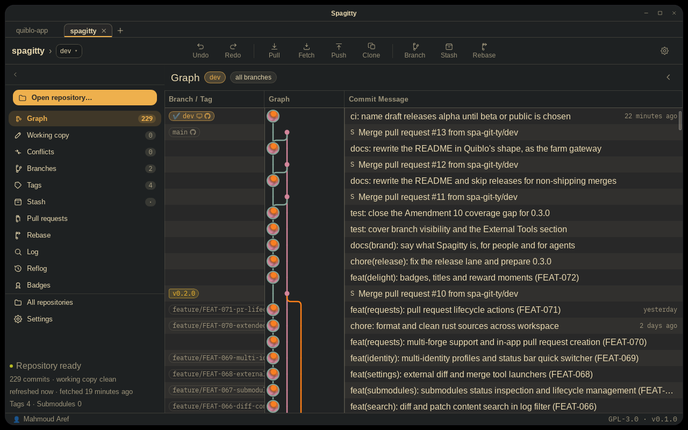
The centre of gravity, and the application's primary navigation surface rather than a read-only report: almost every operation Spagitty can perform is reachable from a right-click here. A streamed, virtualised commit list with a lane canvas, a configurable column table and a detail panel. Rows arrive in batches from a worker thread and never move once drawn. Clicking selects; double-clicking opens the diff.
Operations#
Right-click a commit for create-branch/tag-here, reset (soft/mixed/hard, named by effect rather than by flag), revert, cherry-pick, rebase-onto, detached checkout and copy-SHA. Right-click a branch label for merge, rebase, fast-forward, rename, delete, pin, hide and solo. Dragging one label onto another offers the three integration verbs, with the gesture carrying the direction. Shift and Ctrl/Cmd build a second selection — separate from the detail panel's — that cherry-picks a group or rebases a range.
Nodes and lanes#
A node is the author's portrait, generated from their email and never fetched: the face is a function of the address, so it is the same on every machine and every launch. One description, two renderers — canvas for the node, CSS gradients for the Author column — so a person has one face on screen. A merge is a plain dot; putting the merge author's portrait on it would claim they wrote the branch it swallowed.
The lane column is a surface of its own, bounded by a hairline, painted twice from one declaration: by each row, so it scrolls with them, and by a bed laid out once at the full height of the table underneath. The bed is what a repository shorter than the window needs.
Past twelve lanes the pitch gives, not the column: a thirteenth lane is drawn closer to its neighbour rather than on top of it, down to a floor, so the column's width never depends on how busy the history is and the graph can never reach the message column. Two limits remain, both deliberate — past 32 lanes a node is held at its minimum radius and begins to overlap, because a node that kept shrinking would stop being visible at the depth where it is the only thing locating a commit; and at 48 lanes the pitch reaches its floor.
Hovering dims nothing#
Hovering a branch label used to grey out every commit outside it, and hovering a row drew a dashed ghost line to its nearest reference. Both fire on a pointer only passing through, so the screen flickered as the mouse crossed it. The author filter still dims — that is a standing question you typed, not a side effect of where the pointer is.
1B Diff#
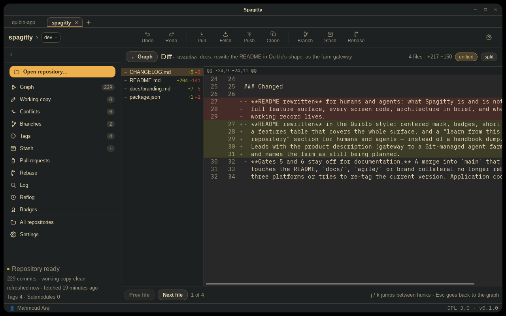
One commit's changes, file by file and hunk by hunk. A full-window takeover rather than a rail
screen: opened from a commit, answering one question, with Esc returning to the graph.
It loads in two steps — the file list and totals in one call, a file's hunks as it is selected — and
hunks are cached by path for the open commit. Unified and split are the same data.
1C Working copy#
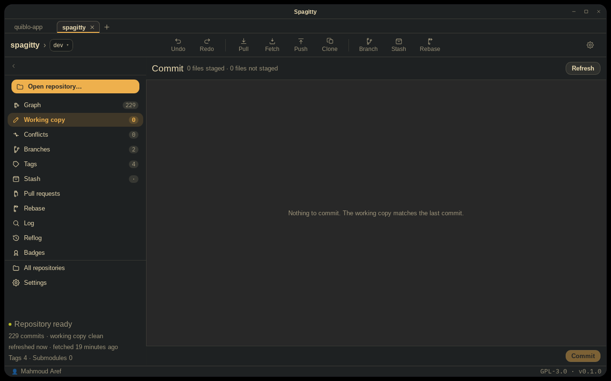
Stage what you mean to commit, write the message, commit. A column holds Staged above Unstaged — solid rows against dashed ones — and a path appears in both when it is staged in part. Beside them: the message box, then the hunks of the selected file with one action each.
The toolbar's Commit button counts staged rather than working: a working copy with ten changed files and one staged must not offer to commit ten.
Discarding is only on the unstaged side — file, hunk, or everything, each behind a confirmation whose wording says whether the file is reverted or deleted. The staged side is deliberately untouched: unstage first, which costs nothing, then discard. Stage, unstage and commit only move changes forward, so the one action that can lose work is the one that asks.
1D Conflicts#
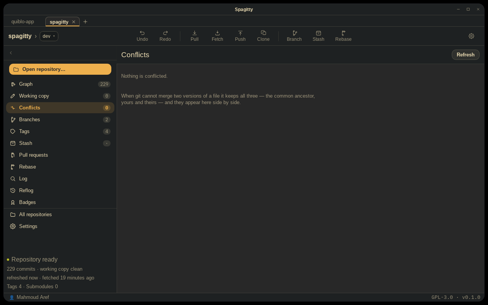
Ours, the merged result and theirs, side by side, with the common ancestor behind a disclosure. The three come from the index: when git cannot merge two versions of a file it keeps all three — stage 1 the base, stage 2 ours, stage 3 theirs — and leaves the working-tree file with markers in it. That is the whole data model.
Which stages exist is the kind of conflict. No stage 1 means both sides added the path; a missing stage 2 or 3 means that side deleted it, and the pane says so rather than rendering empty — an empty pane reads as “they emptied the file”, which is a different thing and one that loses work if acted on.
The operation in progress is read from the repository's own state, never inferred from the presence of conflicts. Merge, rebase, cherry-pick and revert all leave conflicts behind, and naming the wrong one sends someone to the wrong command to get out.
Three ways out of a file — take a whole side, take one marker region, or type into the merged pane —
each followed by an explicit git add, so the index says what the screen says. Two ways
out of the operation, both in the header: Continue, live only once nothing is conflicted, and
Abort, whose confirmation names what comes back.
A test takes the index's modification time either side of visiting every conflicted file and fails if a status walk rewrote it or left a lock behind. Resolving is the only thing that writes, and it is always something you asked for.
1E Interactive rebase#
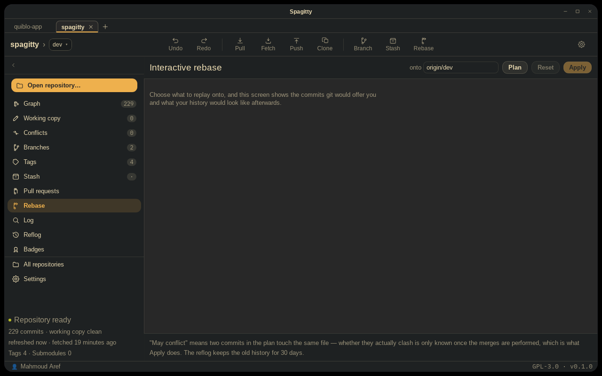
Plan a history rewrite and see the result before anything runs. Interactive rebase is feared because the todo list is edited blind — you choose squash and reword against a list of short ids and find out what you did afterwards — so this screen is the preview, which is the half that carries the value and none of the risk.
The todo list is generated, not parsed. Running git rebase -i to read
the file it opens would start a rebase, which is the thing this screen exists to avoid; the list is
upstream..HEAD walked oldest first with merges excluded — which is what git itself
lists, and there is a test comparing it against git rev-list --reverse --no-merges.
The plan is the complete list and its order is the reordering. The preview is a fold of it,
recomputed after every edit, so the plan and the picture of the plan cannot disagree. A squash folds
upward, which is the direction git folds; a plan whose first row is a squash has nothing above it
and is refused with that reason. Rows move by drag and from the keyboard
(Alt+↑ / Alt+↓) — drag alone is untestable headlessly and unusable for
some people.
Execution runs in a worker so the session lock is never held, with progress read from git's own state counters rather than parsed out of its output. A rebase that stops hands off to Conflicts with continue, skip and abort beside it.
1F Branches#
Every branch, how far it has drifted, and what is safe to forget: branch, ahead/behind, last change, actions. Merged branches render dashed — though the current branch never does, since saying “merged” about the branch you are on reads as “safe to delete”.
Ahead and behind are counted against the remote-tracking ref on disk, so they are as old as the last fetch. The header says how old, and nothing on this screen reaches a network to make them fresher — fetching is the toolbar's job, and the numbers change when it finishes.
Checking out goes through git switch, which only ever changes branch — unlike
git checkout, which guesses between a branch, a revision and a path. Branch names are
validated by git, because a second implementation of check-ref-format could only
disagree with it.
1G Stash#
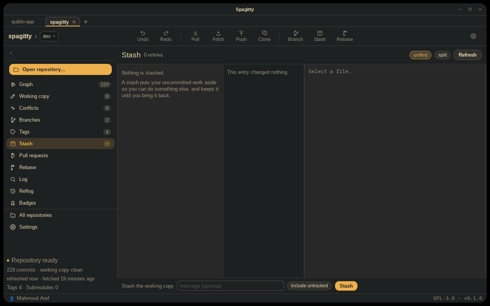
Stash entries drawn hanging off the commit each was made on, then the files in the selected entry, then that file's diff, then a detail panel. The middle two columns are the Diff screen's own components, given their files rather than reading a store — a stash is a commit, so the two lists are the same list and there is no second diff renderer to keep in step.
There is no stash-diff code and there does not need to be: a stash is a commit whose first parent is
the commit the work was made on, so the screen asks about the entry's id like any other commit, and
refs/stash's reflog is the list — stash@{n} is literally the nth entry.
Pop, apply and drop share one confirmation with the graph's own stash menu, written once, so the two
cannot describe the same operation two different ways. Stashing is the only write here, and
git stash push succeeding quietly with nothing to save reads from a button as a stash
that happened and then vanished — so the core refuses that case with a reason instead.
A conflicted apply is not yet handled as its own state. git stash pop
onto a conflict leaves the entry in place and the working copy conflicted, and today that surfaces
as git's own message in a notice — honest, but not the designed recovery.
1H Pull requests#
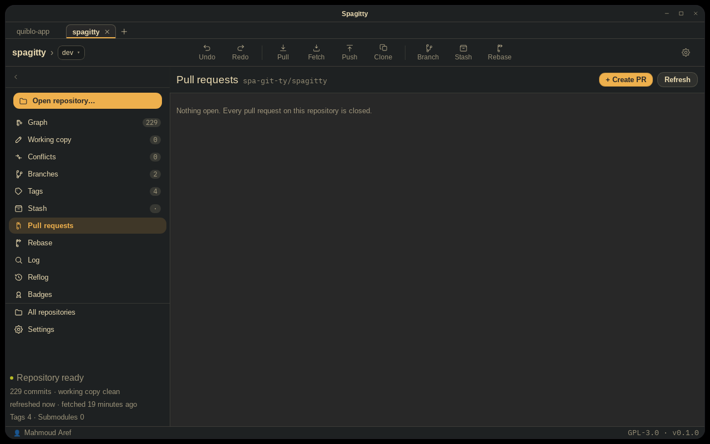
What is waiting on you above what is waiting on everyone else: solid rows over dashed ones, with the detail panel beside them.
Everything else in Spagitty reads the disk. What leaves the machine here is a request to a host you connected, carrying a token you issued, asking for pull requests you can already see in a browser. No repository contents, no paths, no commit messages, no telemetry.
The review workspace#
Opening a pull request transitions to a dedicated full-window view. The header carries the title (auto-scrolling on hover when long), author, relative update time, status chip, checks rollup and commit count. The left pane leads with the description rendered as markdown, then collapsible sections for all changed files and all commits — a commit row is clickable to expand its own file list.
The centre diff pane supports unified and split. Each line offers an inline comment trigger on
hover; threads and local drafts render directly beneath the line they belong to, and drafts persist
in localStorage so no review work is lost to a network hiccup or a restart.
Reviewers compose drafts, inspect threads and publish a review — approve, request changes or comment — with drafts batched into one submission. Authors cannot approve their own pull requests. Developers reply to threads and mark change requests resolved.
Host-agnostic on purpose#
The screen was designed against a contract before any host could be reached, and the forge work filled that contract in rather than redesigning the screen around what one host's API happens to return. A test asserts that no host's name appears anywhere in the screen — the kind of thing that rots the moment somebody adds “Open on <host>” without thinking.
Signing in#
A personal access token rather than OAuth. It is issued, scoped and revoked by you without touching
anything else you own, and it needs no redirect listener and no client secret shipped inside a GPL
binary anybody can read. The login is read back from the host rather than typed. The token goes to
the OS keychain; accounts.json holds a host and a login and nothing else.
1I Log search#
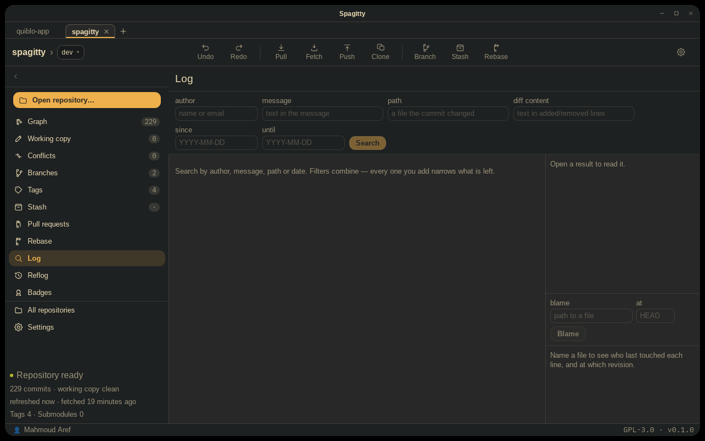
Find commits by author, path, message, date or diff content. The filters compose as AND and each is a chip saying exactly what is applied — the chips are derived from the fields rather than stored beside them, so the two cannot disagree.
A search is the graph's revision walk with a predicate and without lanes. Lanes are absent on purpose: drawing them over a filtered subset would draw edges between commits that are not parent and child. The path filter uses git's own simplification rule — a commit TREESAME to any parent is skipped — which is what stops a merge being listed for a change it only carried across.
Results stream as the walk finds them, and each query carries a token so starting one cancels the
one before. ↵ opens the commit in the side column; Alt+Enter opens its
hunks on the Diff screen, which is a different question. Ctrl+F lands here with the
first field focused, and the focus travels in the URL so the shortcut and a bookmark behave
identically.
1J All repositories#
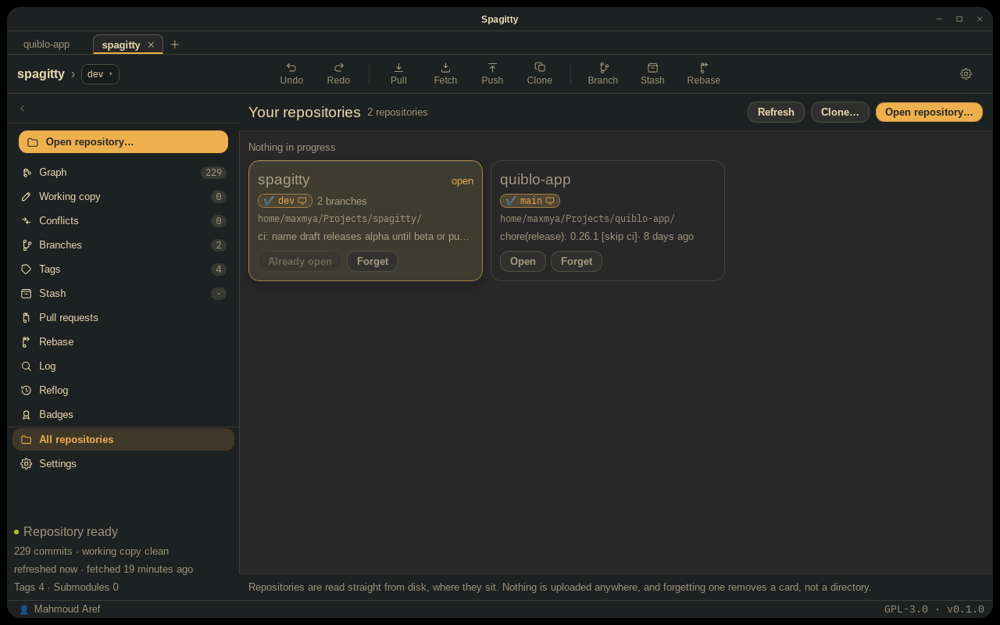
Every repository you work in and which ones need attention: “Needs you” above “Nothing in progress”, the second rendered dashed. A card carries the branch, the path, what the repository was last doing, and a chip for each thing going on — conflicts first, since those are what stop work.
Spagitty never goes looking for repositories. Opening one is the only way it joins the list, which lives in Spagitty's own config directory as a plain JSON file of paths. Each card is read where the repository sits, without opening it as the current one and without writing to it — there is a test comparing the index's modification time either side of the read. A path that has gone comes back as a card saying so rather than being dropped: a repository that moved is something to see, not something to forget quietly. Forgetting removes the row and never the directory.
1K Settings#
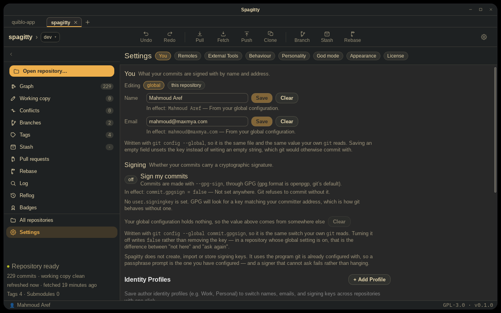
Sections behind a chip index — You, Remotes, External
Tools, Behaviour, Personality, God mode,
Appearance, License — because these are read rarely and changed
rarely, and one route that says which part of itself is showing is easier to link to than eight rail
entries. The section is in the URL fragment, so /settings#accounts lands where the Pull
requests screen points.
You#
Everything about who you are: the identity, the signing key, saved profiles, and connected hosting accounts. The scope is always a parameter, never inferred — both values report which file they came from, the fields say which scope they are editing, and changing scope refills them rather than carrying a typed value across. Clearing a field unsets the key rather than writing an empty string.
Behaviour, and the honest toggle#
A toggle that is not honoured yet names the item that will honour it, because narrowing the claim to the truth is better than a switch that silently does nothing. Show the git command behind each action is honoured: it adds a Commands button to the toolbar and a palette command, both opening a drawer of what Spagitty actually ran.
God mode#
Every other badge takes real work to see, which is the point of them and also the problem: nobody can check that a badge looks right without earning it, and nobody is going to resolve ten conflicts to find out whether a sound is too loud. Four groups, ordered by what they cost — preview a card (writes nothing), fire an event the application really produces (through the real rules), grant or revoke straight into the record (the only writes that bypass the engine), and whole-record operations.
Appearance#
The one place the theme is set. Eight families, each in light and dark, named the way the family names them, and each shown as its own four colours in the mode currently on — a light preview of a theme about to be used in the dark is a preview of something nobody will see. See themes & appearance.
License#
The version, the build, the project's licence, and its dependencies' licences. The dependency list is generated at build time, not typed — a hand-written list is wrong by the next update. It lists only what is linked: build and development dependencies are not distributed, so describing them as part of the binary would be wrong. A list that cannot be generated degrades to a shorter one with a note saying what is missing and why, and that degradation is itself tested. A package declaring no licence is listed as “not declared” rather than omitted.
With none open, the identity falls back to the global scope and every other section is unaffected. God mode is the exception and says so: previews and sounds work, and everything that writes a badge record is disabled because there is nowhere to write it.
1L Clone#
Bring a repository in: an address, a folder, and the exact path it will land at, shown before anything runs. A clone survives navigation — it takes minutes on a large repository, and pressing something in the nav rail while it runs must not cancel it — so the modal is owned by the layout rather than by a screen.
-
The clone goes through the
gitbinary, which is the point: it is the first operation that needs credentials, and credential helpers are external programs resolved through config.GIT_TERMINAL_PROMPT=0means a repository no helper can supply fails with git's own message rather than hanging on a prompt there is no terminal for. Spagitty never asks for a password itself. -
Everything that can be refused is refused before the process starts. An unusable
address, a missing folder, a destination that already has something in it — each is computed as
you type and each is knowable without the network. An existing empty destination is
allowed, because
git cloneallows it: matching git's rule rather than inventing a stricter one is what makes a Spagitty clone the same as a command-line clone. - Progress is git's, parsed rather than invented. A line the parser does not recognise is still shown, so a change to a format git does not promise degrades to “no percentage” rather than “no progress”.
- Cancelling removes only what the clone created. Whether the destination existed is decided before the process starts and remembered; a directory you already had is left exactly as it was found. The removal happens after the child is reaped, never after the kill signal, or the two race and files reappear behind it.
1M Reflog#
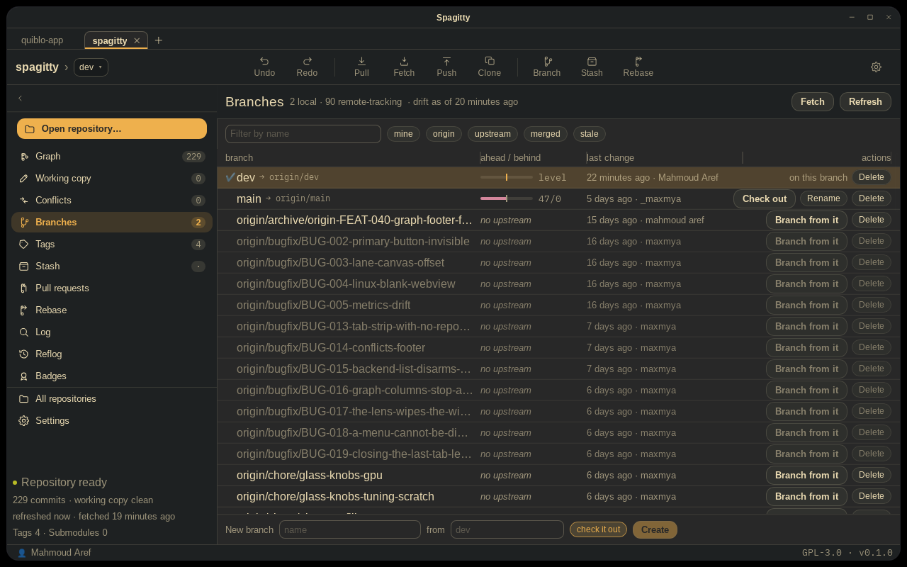
Every other screen answers “what does history look like”. This one answers “what did I just do to it”, which is a different question and the only one that matters when something has gone wrong. Read HEAD or any local branch, with three ways out of an entry — branch here, check out here, reset here — offered in that order of prominence, because only the first cannot cost anything.
1N Tags#

Creating and deleting a tag was possible from the graph's context menu long before this screen — which meant you could only do either while already looking at the commit. Tags in one place: create, delete, rewrite an annotated message, check out. Annotated and lightweight are told apart throughout, because the difference decides whether a message can exist at all.
1O File history#
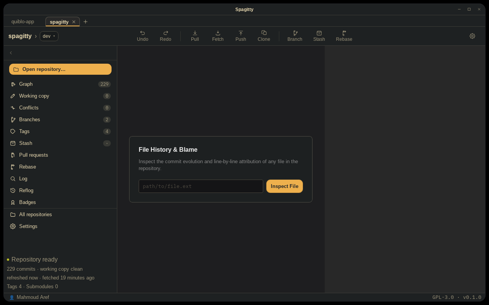
One file's evolution and its line attribution. The timeline follows renames — the walk is
git log --follow over the selected path — showing author, time, summary and short hash.
The right pane renders line-by-line blame beside the file content, and hovering a commit in either
place highlights every line it introduced. Commit chips link back into the graph.
Blame goes through the git binary, and it is the one read in the
application that does. The reason and its end condition are written down in
the core crate reference. A binary
file, a missing path and a directory each say which, rather than rendering an empty list — an empty
list reads as a file nobody has ever touched.
1P Badges#
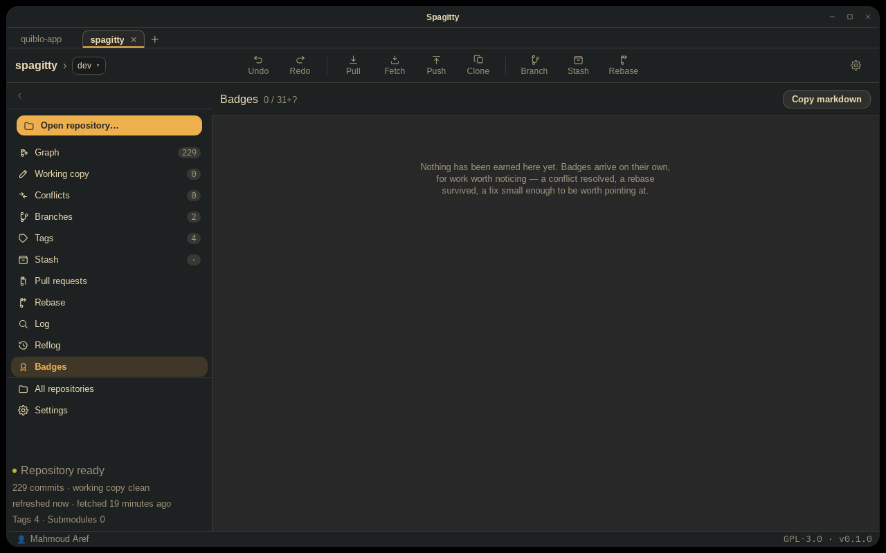
What has been earned in this repository, and by whom. It is the one screen that is not about the state of a repository, which is also why it survives having none open with a sentence rather than a blank — “none of this has happened yet” is a real answer.
Per repository, and per actor. A badge earned in one codebase says nothing about
another, and an aggregate across all of them would flatter whoever has the most repositories. A
human is keyed on their git email, so switching an identity profile switches record; an agent is
keyed on its own slug and is credited from the Co-authored-by trailer its commits
already carry.
A secret badge is drawn as a slot with ??? in it — shown rather than omitted, because a
list that simply ended would say the collection was complete. The header reads
n / m+? for the same reason.
The agent table has no human on it. Ranking the person at the keyboard against the models they are supervising turns a useful comparison — which of these does well in this repository — into a productivity leaderboard, which is the thing the feature exists not to build.
1Q Farm#
Supervising a small engineering team from inside the Git client. The plan is on the left, the selected task in the middle, and the log along the bottom — the three questions a supervisor has, answerable without navigating between them. A person who has to move between those three is reading a log.
The screen has a page of its own: the agent farm.
The window itself#
The window is undecorated and transparent, so everything you read as “the window” is drawn by the application: a 12px corner, a hairline outline, an inset highlight along the top edge, and two shadows — a tight dark one holding the card down and a wide soft one giving it height. Maximising drops all of it, because a floating card with a gap around it is a window that does not fit its own screen. CSS cannot ask Tauri its state, so the window publishes it as a data attribute on the root element.
Every panel resizes, from a registry where each panel names its CSS variable, the edge it is anchored to, and its range. The anchored edge decides the drag direction, and the splitter measures the panel beside it rather than the window — the window's edge is the right reference only for the rail, and wrong for anything nested inside a screen.
How the glass is drawn, and why the usual web technique for it renders nothing on Linux, is on themes & appearance.